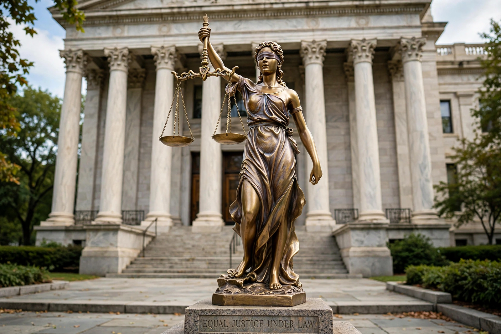

Right to a fair trial
From Wikipedia, the free encyclopedia

The right to a fair trial is a fundamental human right protecting individuals charged with criminal offences: the right to be heard by an independent and impartial tribunal, to be presumed innocent until proved guilty, to be informed of the charge, to have adequate time and facilities to prepare a defence, to legal assistance, and to examine witnesses. It is enshrined in Article 14 of the International Covenant on Civil and Political Rights, Article 6 of the European Convention on Human Rights and the Universal Declaration of Human Rights (Articles 10–11).
Components
Common elements include: a public hearing within a reasonable time; equality of arms between prosecution and defence; the Presumption of innocence; protection against self-incrimination; interpretation for those who do not understand the court's language; and the right to appeal. Some elements are absolute, others may be limited proportionately; the right is non-derogable in its core under the ICCPR even in emergencies.
Sources and enforcement
Regional systems enforce fair-trial rights robustly: the European Court of Human Rights has found thousands of Article 6 violations, especially over trial length and judicial independence. In the United States, fair-trial guarantees are distributed across the Fifth, Sixth and Fourteenth Amendments — speedy and public trial, impartial jury, confrontation, compulsory process and counsel (Gideon v. Wainwright, 1963). The right also forms part of International humanitarian law (Common Article 3 of the Geneva Conventions) for armed conflict.
Contemporary challenges
Pressure points include pre-trial publicity and social media, plea bargaining (which resolves the vast majority of US criminal cases without trial), terrorism and migration proceedings, remote hearings accelerated by the COVID-19 pandemic, and the erosion of judicial independence in backsliding democracies.